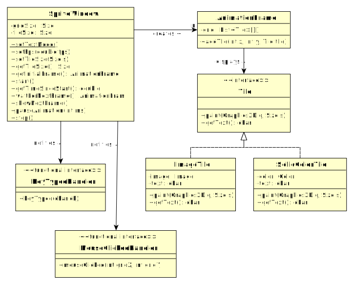

Spritely - a Simple Sprite Animation Framework

|
|
Spritely
Spritely is a simple grid-based animation framework
with a text mode. It was written for an introductory
OO programming course.
See The Javadocs for a description of
Spritely.
See The Github Repository
for releases, source code, etc.
|
|
This package provides a framework for showing an animated grid of
equal-size tiles, which is a limited form of sprite animation.
It was written for educational purposes in an introductory OO
class. It has a few unique features:
- It strives to be as simple as possible, so as to not overload
students with language features, unfamiliar idioms, or complex
code to read through.
- It does not force the student to do all their work via
callbacks, as is typical for GUIs. The student is presented with
a single-threaded model, where they ask the frame to display each
animation frame.
- It allows programs to be run in text mode, using character-based
graphics. This allows students to do their development on a
remote server via ssh, so they don't have to do system
administration on their personal computer, like installing
a Java environment, setting the CLASSPATH, or installing an X server.
- It restricts the user to equal-sized tiles. This is more or less
necessary to enable character mode.
- It handles the needed logic to maintain a given frame rate. It
handles the case where a program is suspended and woken back up,
by moving the notion of time forward.
- It features simple callbacks for mouse clicks and key typed events,
and it simulates these events in text mode.
See The Javadocs for
full documentation.
